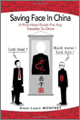

Esta guía sintética y práctica proporciona una comprensión profunda de la importancia cultural del concepto de "cara" en China.
Describe los malentendidos más frecuentes entre los occidentales y los chinos. Este libro no es ni un libro de cocina ni un tratado científico. Está lleno de anécdotas y errores compartidas por chinos y occidentales (europeos y americanos) recogidas y analizadas a lo largo de varios años de entrevistas e investigaciones.
| Contenido | |
|
|
Los consejos son simples y fáciles de aplicar en la vida cotidiana y en los negocios. Al final de cada capítulo, el lector puede encontrar un cuestionario para ayudarle a resumir lo más importante.
¿Por qué escribir un libro sobre el concepto de “cara” en China?Cuando estaba viviendo en China, me di cuenta de que había muchas incomprensiones entre los occidentales y los chinos que procedían directamente de un problema de “cara”. Aunque “guardar la cara” en China es crucial e intercede en cada relación social, este concepto es a menudo desconocido o mal interpretado. Decidí escribir este libro para ayudar a todas las personas que viven en China o trabajan con los chinos que se enfrentan diariamente a estas cuestiones de “cara”.
| Disponible también en inglés! |